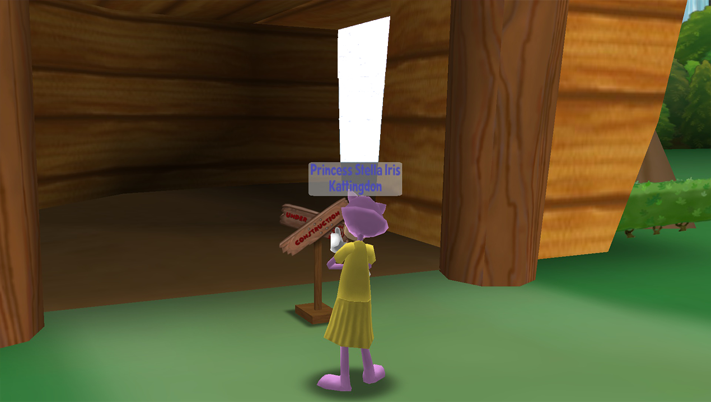

Hello there! My name is Gracie aka THE PLAYER ZER0 and I want to personally welcome you to the official Toontown Fantasy website!
As you can see, this website is still in development. So, some things might be unfinished! If that's the case, click on this link to report the bug!